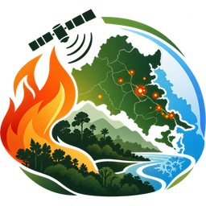

Berau Fire Watch
Geospatial Environmental Intelligence
Pemantauan Risiko Kebakaran, Hotspot, Cuaca, dan Kualitas Udara di Kabupaten Berau
Memuat data…
Metode dan sumber
Perbarui
Hotspot sesuai periode
–
Menunggu data satelit
Risiko tertinggi
–
Skor model / 100
Deteksi terbaru
–
Waktu akuisisi satelit
Periode hotspot
24 jam terakhir
48 jam terakhir
Semua data tersedia
Filter peta, statistik, dan grafik